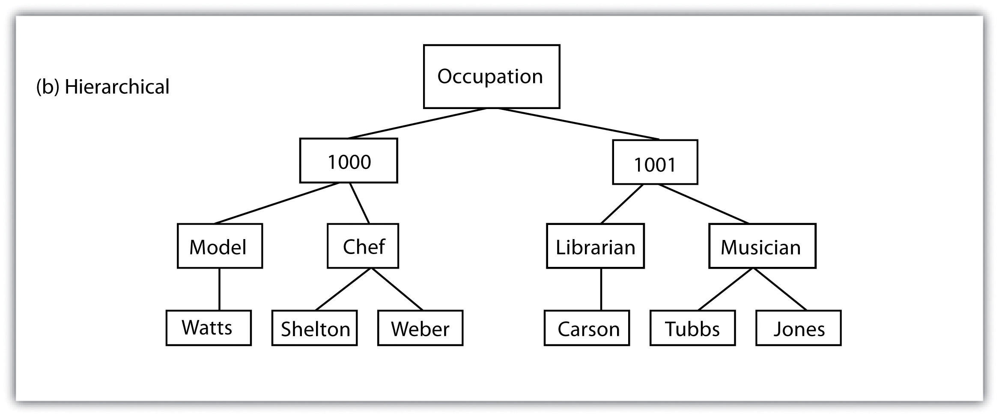
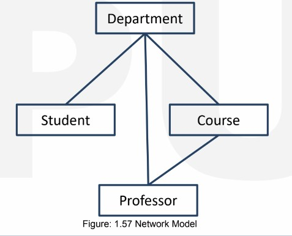
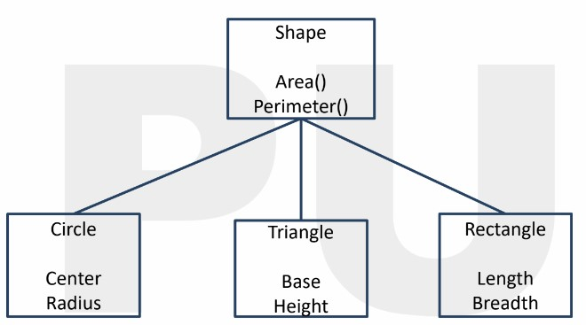
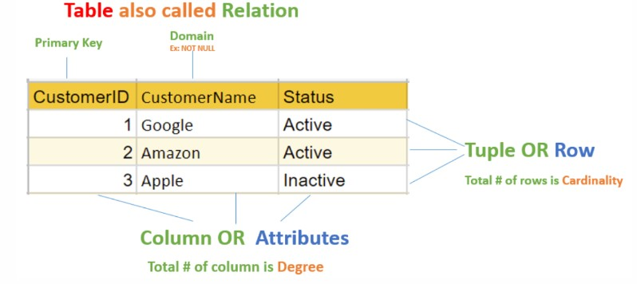

What are Data Models ?
Data models in MySQL, as in other database systems, are conceptual representations of how data is organized and structured within a database. They define the logical structure of data, the relationships between data elements, and the operations that can be performed on the data.
Here are the main Data Models listed below :-
- Hierarchical Model
- Network Model
- Object-Oriented Model
- Relational Model
- Nodes :- Nodes represent data elements in the hierarchy. Each node has a unique identifier within its parent's context and may have attributes that store data.
- Parent-Child Relationships :- The primary feature of the hierarchical model is the one-to-many relationship between nodes. Each node (child) is connected to a single parent node, and a parent node can have multiple child nodes.
- Root Node :- The top-level node in the hierarchy is called the root node. It has no parent and serves as the starting point for traversing the hierarchy.
- Leaf Nodes :- Nodes with no children are referred to as leaf nodes. They are the endpoints of the hierarchy and do not have child nodes.
- Paths :- A path in the hierarchical model represents the sequence of nodes from the root node to a specific node in the hierarchy. Paths are used to locate and navigate to nodes within the hierarchy.
- Hierarchical Queries :- Querying hierarchical data typically involves navigating the hierarchy using parent-child relationships. Common operations include retrieving all child nodes of a parent node, finding ancestors or descendants of a specific node, and locating nodes based on their attributes.
- Simplicity :- The hierarchical model is easy to understand and implement, making it suitable for certain types of data with clear parent-child relationships.
- Efficiency :- Retrieving data from hierarchical structures is efficient because it follows a well-defined path, similar to navigating a file system.
- Intuitive :- It mirrors real-world hierarchical relationships, making it intuitive for modeling certain types of data, such as organizational charts.
- Limited Flexibility :- It is not suitable for representing data with complex or many-to-many relationships. In hierarchical structures, data must fit neatly into a tree-like hierarchy.
- Data Redundancy :- Data redundancy can occur when multiple nodes need to store similar or duplicated information.
- Difficulty in Handling Changes :- Modifying the hierarchy structure or relationships can be challenging, especially when dealing with dynamic data.
- Lack of Standard :- Unlike the relational model, there is no standardized query language (like SQL) for hierarchical databases, which can lead to non-standardized access methods.
- Organizational Structure
Example :- An HR database can use the hierarchical model to store employee records, where each employee is associated with a department and manager.
- File Systems
Example :- In a file system, directories (folders) can contain files and subdirectories, forming a hierarchical structure.
- Product Categories
Example :- An online store can use the hierarchical model to categorize products into main categories (e.g., electronics, clothing) and subcategories (e.g., laptops, shirts).
- Bill of Materials
Example :- Manufacturers use the hierarchical model to represent the components needed to build a product. Each component can have subcomponents, forming a hierarchical BOM.
- Genealogy and Family Tree
Example :- Genealogy software and websites use the hierarchical model to represent family trees with individuals as nodes and parent-child relationships.
- Nodes(Records) :- Nodes in the network model are similar to records in a database table. Each node can have multiple attributes to store data, similar to fields in a record. Nodes are used to represent entities in the database.
- Relationships(Edges) :- Relationships in the network model are represented as edges connecting nodes. Unlike the hierarchical model, where relationships are strictly parent-child, the network model allows for more complex relationships. A node can be related to multiple other nodes, both as a parent and as a child.
- Sets :- Sets are collections of nodes and represent a fundamental concept in the network model. Sets are used to define relationships between nodes. A set can contain one or more nodes, and a node can belong to multiple sets. Sets are used to navigate the network and access related nodes.
- Parents and Child Nodes :- While a node can have multiple parent nodes and child nodes, in practice, there is often a distinction between one primary parent (owner) and multiple secondary parents (members). This owner-member relationship allows for controlled access to related data.
- Records Types :- Similar to tables in the relational model, the network model uses record types to organize nodes with similar attributes and structures. Record types define the schema for nodes.
- Pointers :- To navigate the network, the model uses pointers or linkages. Pointers are used to specify relationships between nodes, indicating how nodes are connected in sets. Pointers are essential for traversing the network structure.
- Flexibility :- The network model provides greater flexibility than the hierarchical model for representing complex data relationships, including many-to-many relationships.
- Efficient Data Retrieval :- It is efficient for retrieving data that requires traversing complex relationships, as it allows access to data through multiple paths.
- Data Integrity :- The model supports data integrity through controlled access and relationships defined in sets.
- Complexity :- The model can be complex to design, implement, and maintain due to its support for complex relationships and pointers.
- Lack of Standardization :-Unlike the relational model with SQL as a standardized query language, the network model lacks a standardized query language, making it less consistent across database systems.
- Limited Adoption :- The network model has limited adoption compared to the relational model, which became the dominant database model in the industry.
- Organizational Structures
Example :- An HR database can use the hierarchical model to store employee records, where each employee is associated with a department and manager.
- File Systems
Example :- In a file system, directories (folders) can contain files and subdirectories, forming a hierarchical structure.
- Product CategoriesExample :- An online store can use the hierarchical model to categorize products into main categories (e.g., electronics, clothing) and subcategories (e.g., laptops, shirts).
- Bill of Materials (BOM)Example :- Manufacturers use the hierarchical model to represent the components needed to build a product. Each component can have subcomponents, forming a hierarchical BOM.
- Taxonomies and Hierarchical Data TaxonomiesExample :- A knowledge base can use the hierarchical model to organize articles, with topics, subtopics, and articles forming a hierarchical structure.
- Objects :-Objects represent entities or concepts in the real world, such as a person, place, or thing. Each object has its own unique identity and encapsulates both data (attributes) and behavior (methods).
- Classes :- Classes are blueprint templates for creating objects. They define the structure, attributes, and methods that objects of that class will have. Classes are used to create instances (objects) of the class.
- Attributes :- Attributes, also known as properties or fields, represent the data associated with an object. They describe the characteristics or properties of the object.
- Methods :- Methods are functions or procedures associated with objects. They define the behavior or operations that can be performed on objects of a particular class.
- InheritanceInheritance allows one class to inherit attributes and methods from another class. This promotes code reuse and hierarchy in class structures.
- Encapsulation :-Encapsulation refers to the bundling of data (attributes) and methods that operate on that data into a single unit (object). It enforces data access control and data integrity.
- Polymorphism :-Polymorphism allows objects of different classes to be treated as objects of a common superclass. It enables dynamic method invocation and flexibility in handling objects.
- Association :- Association represents relationships between objects. Objects can be associated in one-to-one, one-to-many, or many-to-many relationships, capturing real-world connections.
- Aggregation and Composition :- Aggregation and composition are forms of association that describe the relationships between whole objects and their parts. Composition implies a stronger relationship than aggregation.
- Real-World Modelling :- It closely mirrors real-world entities, making it intuitive for modeling real-world scenarios.
- Code Reusability :- OOP principles encourage code reuse through inheritance and encapsulation.
- Complex Relationships :- It can represent complex relationships and behaviors effectively.
- Data Integrity :- Encapsulation allows for control over data access and ensures data integrity.
- Complexity :- Designing object-oriented databases can be complex, especially for large and intricate systems.
- Lack of Standardization :- Unlike SQL for relational databases, there is no standardized query language for object-oriented databases.
- Performance :- Object-oriented databases may have performance issues when handling large amounts of data due to their complexity.
- Enterprise Software
Example :- An ERP system can use the object-oriented model to represent orders, inventory items, suppliers, and employees, with methods for processing orders and managing inventory.
- Geographic Information System
Example :- A GIS application can model geographic objects like cities, roads, and landmarks as objects with properties such as coordinates, names, and populations.
- Simulation and Modeling
Example :- In a flight simulator, aircraft and environmental conditions can be modeled as objects with properties (altitude, speed) and methods (flight control).
- Content Management Systems
Example :- A CMS can treat content elements (articles, images) as objects with attributes (title, author) and methods (publish, archive).
- Game Development
Example :- In a role-playing game (RPG), game objects such as characters, weapons, and quests can be represented as objects with attributes and behaviors.
- Tables(Relation) :- Tables, also known as relations, are the primary data structures in the relational model. Each table represents a specific entity or concept, such as "Customers," "Orders," or "Products."
- Rows(Tuples) :- Rows, also called tuples, represent individual records within a table. Each row contains a unique combination of data values that pertain to a single instance of the entity represented by the table.
- Columns(Attributes) :- Columns, also known as attributes, define the types of data that can be stored in a table. Each column has a name and a data type, such as text, number, date, or binary.
- Primary Key :- A primary key is a unique identifier for each row in a table. It ensures that each row has a distinct identity within the table.
- Foreign Keys :- A foreign key is a column in one table that establishes a link to the primary key of another table. It enforces referential integrity, ensuring that relationships between tables are maintained.
- Relationships :- Relationships between tables are defined by connecting tables through foreign keys. Common relationship types include one-to-one, one-to-many, and many-to-many.
- Normalization :- Normalization is a process used to eliminate data redundancy and improve data integrity by organizing data into separate tables based on their logical relationships.
- Structured Query Language :- SQL is the standardized query language used to interact with relational databases. It provides commands for querying, inserting, updating, and deleting data in tables.
- ACID Properties :- Relational databases adhere to the ACID properties (Atomicity, Consistency, Isolation, Durability), ensuring transactional consistency and data reliability.
- Simplicity :- The tabular structure of tables, rows, and columns is easy to understand and use.
- Data Integrity :- Constraints, such as primary keys and foreign keys, help maintain data integrity.
- Standardized Query Language :- SQL provides a standardized and powerful way to interact with relational databases.
- Scalability :- Relational databases can handle a wide range of applications, from small-scale to enterprise-level systems.
- Maturity and Support :- Relational databases have a long history, extensive documentation, and strong support from database vendors.
- Complex Queries :- Complex relationships or queries may require multiple joins across tables, leading to potentially complex SQL statements.
- Performance :- In certain situations, relational databases may experience performance bottlenecks, especially with very large datasets.
- Schema Changes :- Modifying the database schema (table structure) can be challenging and may require careful planning in production environments.
- Business and Finance
Example :- Banks use relational databases to store customer account details, transaction histories, and loan records.
- E-Commerce and Retail
Example :- Online retailers use relational databases to manage product listings, track orders, and analyze sales trends.
- Healthcare
Example :- Hospitals and healthcare providers use relational databases for electronic health records (EHRs) and medical billing.
- Content Management
Example :- Content management systems (CMS) use relational databases to store and retrieve content for websites and digital platforms.
- Education
Example :- Educational institutions use relational databases for student information systems and course management.
- Web Application
Example :- Social media websites and web applications rely on relational databases to manage user-generated content and interactions.
- Airlines and Travel
Example :- Airlines and travel agencies use relational databases for booking and managing travel services.
What is Hierarchical Model ?
The hierarchical data model is a database model that represents data in a tree-like or hierarchical structure. In this model, data is organized into a hierarchy of parent-child relationships, similar to the structure of a tree, where each data element (node) has a single parent node and zero or more child nodes. This model was widely used in the early days of database management systems and is still relevant for certain applications today.
There are some extra terms related to the Hierarchical Model listed below :-
Advantages of Hierarchical Model :-
Disadvantages of Hierarchical Model :-
Application of Hierarchical Model are as follows :-
What is Network Model ?
The network data model is a database model that extends the hierarchical data model by allowing nodes to have multiple parent nodes. In the network model, data is organized into a more flexible and complex structure compared to the strictly hierarchical model. It uses a set-based approach to represent data and relationships, using records and sets.
There are some extra terms related to the Network Model listed below :-
Advantages of Network Model :-
Disadvantages of Network Model :-
Application of Network Model are as follows :-
What is Object-Oriented Model ?
The object-oriented data model is a database model that represents data as objects, where each object combines data attributes (properties) and methods (functions or procedures) to operate on the data. This model extends the concepts of object-oriented programming (OOP) to database management, allowing data to be stored, organized, and queried in a manner that closely mirrors real-world objects and their behavior. The object-oriented model is particularly suited for applications where data exhibits complex relationships and behaviors.
Here are some extra concept related to Object-Oriented Model listed below :-
Advantages of Object-Oriented Model :-
Disadvantages of Object-Oriented Model :-
Application of Object-Oriented Model are as follows :-
What are Relational Models ?
The relational model is a database model that represents data as a collection of tables, where each table consists of rows and columns. This model was introduced by Edgar F. Codd in the 1970s and has become the most widely used data model in modern database management systems (DBMS).
Here are some important terms related to the Relational Model listed below :-
Advantages of Relational Model :-
Disadvantages of Relational Model :-
Application of Relational Model are listed below :-